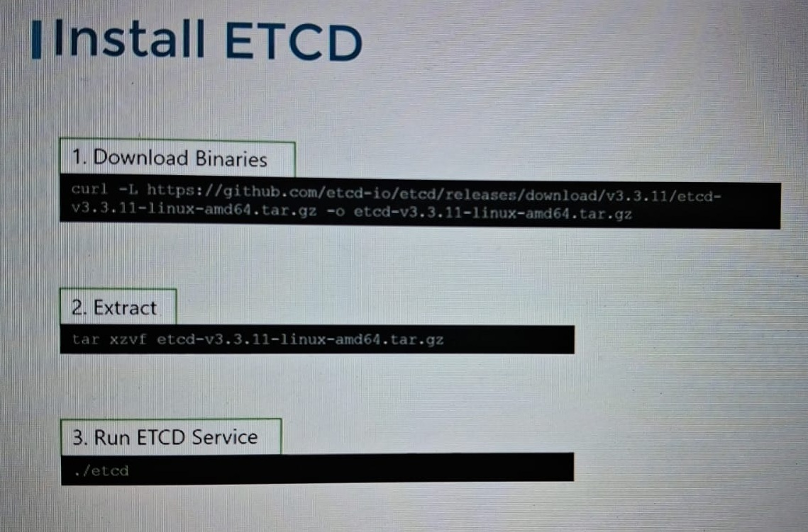
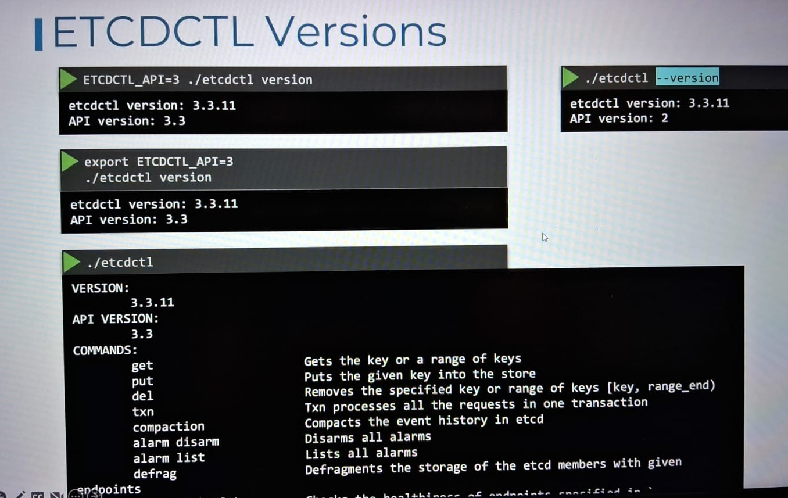
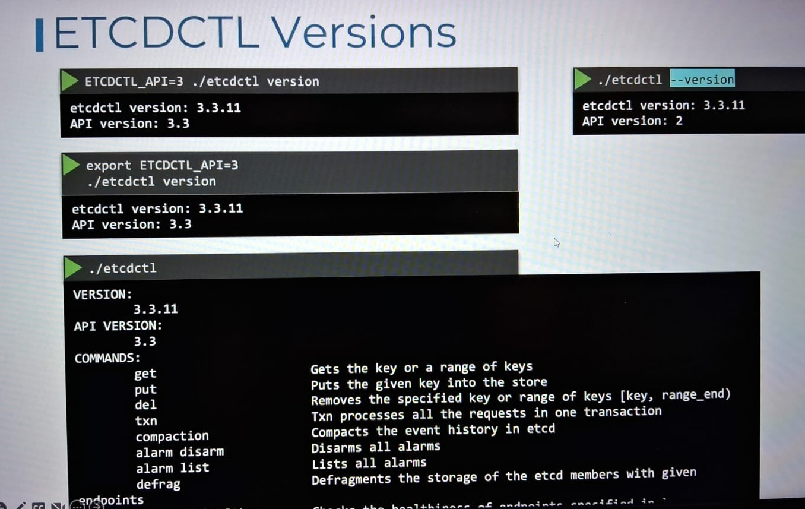

ETCD is a distributed reliable key-value store that is simple, secure and fast.
ETCD is a key-value store that stores all cluster data in Kubernetes. It's a critical component of Kubernetes, and is used for:
ETCD is an open-source, distributed, persistent key-value store, and a type of NoSQL database. It's built on the Raft consensus algorithm to ensure data storage consistency across all nodes in a cluster.
Raft consensus algorithm : this algorithm update the data by itself if there is old entry in the config file.
ETCD is reliable and efficient, and is primarily designed for distributed systems. It's a better performing option than Redis for fault tolerance, and it supports continuous data availability.
Install ETCD
Operate ETCD
ETCD is a key value databse and work on port 2379

ETCD version
 
